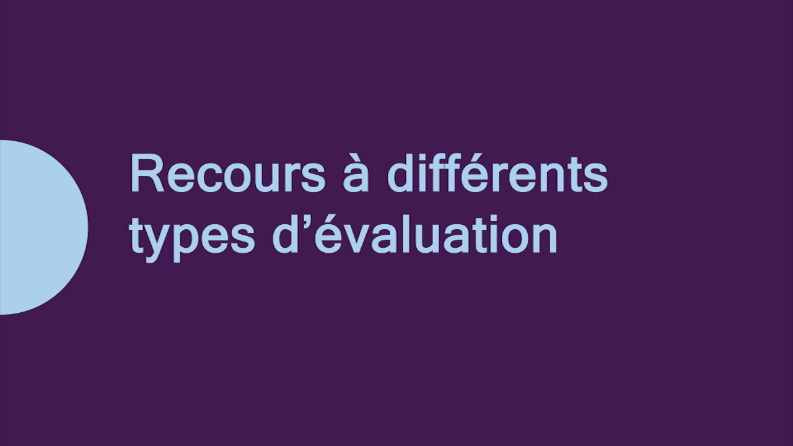
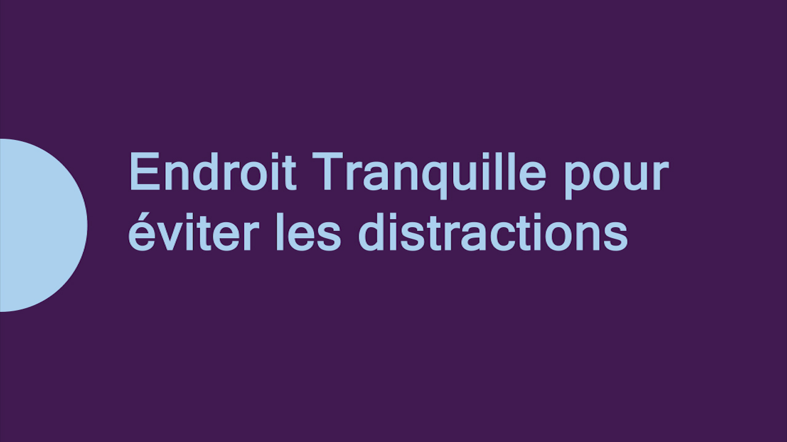

Utilisation de la technologie, y compris la technologie d’assistance
La technologie utilisée ayant pour but d’adapter la façon d’évaluer le rendement de l’élève.

Recours à différents types d’évaluation
Personnaliser les activités et les méthodes d’évaluation pour permettre à l’élève de mieux démontrer ses apprentissages.

Offre d’occasions d’autoévaluation et d’établissement d’objectifs personnels
Offrir à l’élève des occasions pour l’aider à développer sa capacité à auto-évaluer son rendement et à fixer des objectifs d’apprentissage personnels.